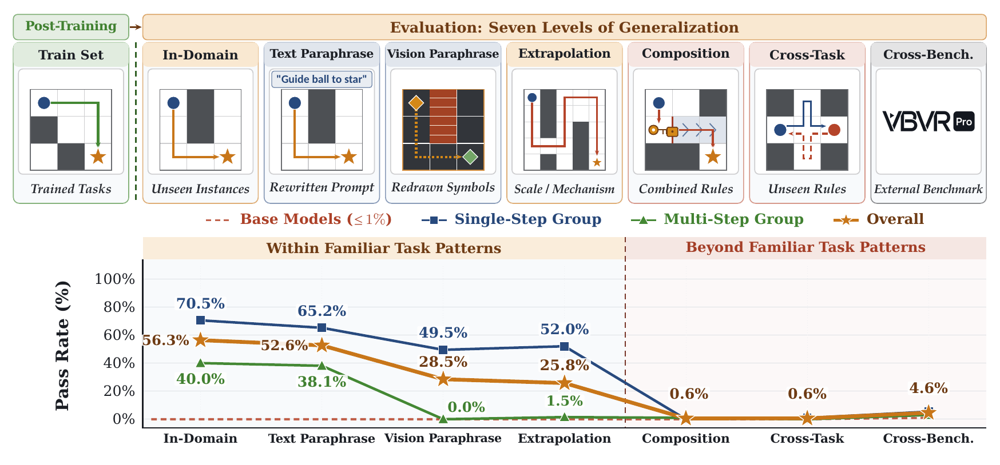
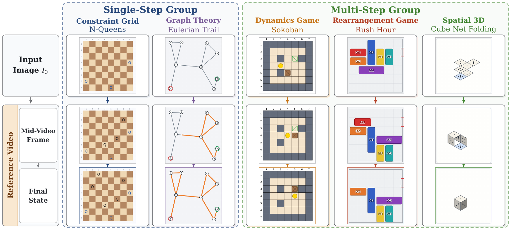
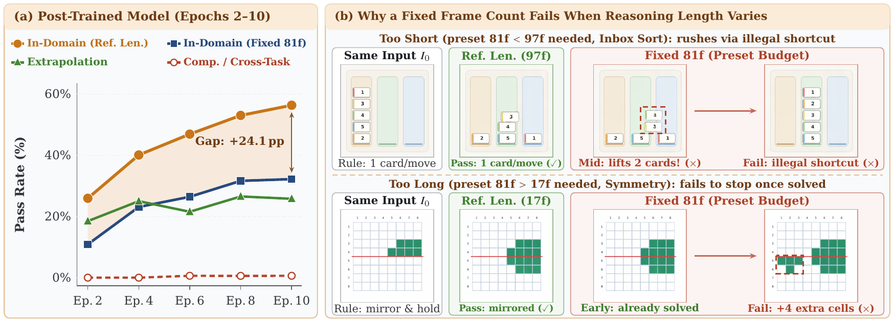
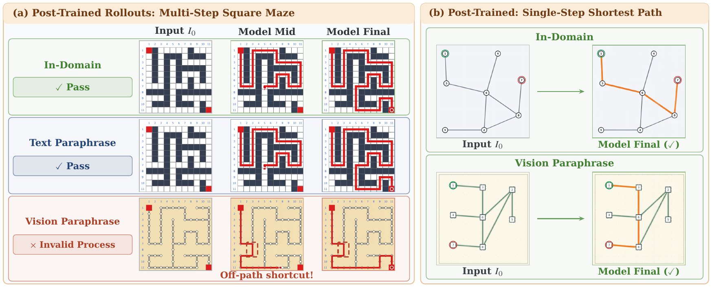
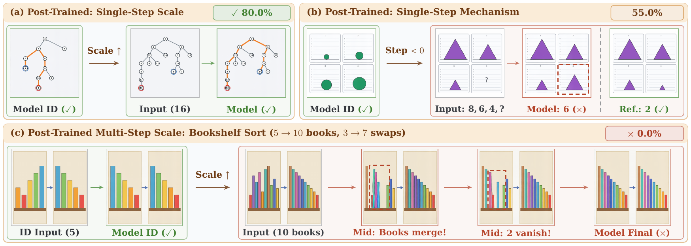
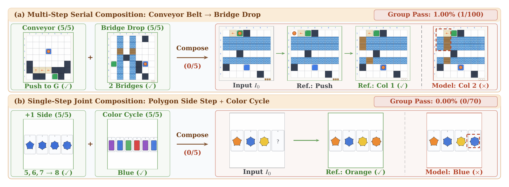
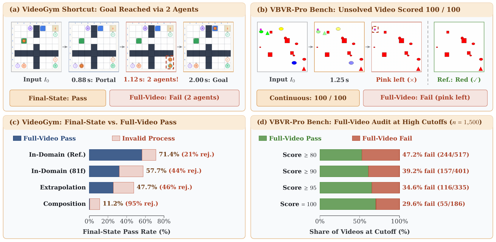

Can Video Generation Models Really Learn to Reason?
Current video generation models, which lack sufficient pretraining for visual reasoning, cannot really learn to reason through post-training (i.e., acquire generalizable reasoning). Open-weights base video models start at 0.00% on zero-shot visual reasoning. Post-training (SFT and RLVR) improves accuracy within familiar task patterns (mainly when marking one static answer on an unchanging scene), yet collapses near 0% beyond familiar task patterns, failing both to combine mastered rules and to solve unseen rules in the same categories. Instead of really learning to reason, post-trained models replay familiar solution templates and remain visual renderers rather than visual reasoners.
Visual Renderers vs. Visual Reasoners
Visual Renderer
Prompt already specifies what happens across time.
Video DiT turns the stated trajectory into plausible pixels.
No rule-solving ability when target moves are left unstated.
Visual Reasoner
States rules and goal only; intermediate moves are unstated.
Must work out valid steps and update world state before rendering.
Must combine mastered rules (Composition) & solve new rules (Cross-Task).
Evaluated at pass@1 without external LLM prompt rewriting, three open-weights base models (LTX-2.3, Wan2.2-I2V-A14B, and Wan2.2-TI2V-5B) score 0.00% across all 3,220 questions in VideoGym-Test (≤1.00% on VBVR-Pro Bench). Because high accuracy on unseen instances of trained tasks can arise from replaying memorized visual templates rather than working out steps from rules, testing Composition and Cross-Task within the exact same 11 problem categories cleanly separates genuine reasoning from pattern replay.

Click to enlargeThe VideoGym Framework
VideoGym unifies procedural task synthesis, full-DiT post-training, seven-level generalization testing, and deterministic frame-by-frame verification.
246 In-Domain tasks across 11 families (~1,000 instances per task in VideoGym-Train).
10-epoch full-parameter SFT producing VideoGym-LTX-2.3, plus external SFT & RLVR models.
744 level-by-task entries separating Within Familiar robustness from Beyond Familiar reasoning.
Deterministic frame-by-frame process & end-state verifiers (>97% human agreement).
1. Single-Step Group vs. Multi-Step Group Across 11 Task Families
Regardless of internal search depth or video duration, every task belongs to one of two groups based strictly on whether solving it visually alters intermediate world states:
Draws one fixed answer onto an unchanging scene (e.g., N-Queens or Eulerian trails). Strokes may animate progressively across frames, but the underlying puzzle never changes.
Executes chained state transitions (e.g., Sokoban, Rush Hour, or 3D cube folding), where each move updates the world for the next and any mid-video slip breaks downstream steps.

Click to enlarge2. Seven Progressive Levels of Generalization
Evaluated on disjoint test seeds (5 questions per task; accompanied by a 20-question-per-task audit on out-of-domain and matched source tasks), 3,720 benchmark questions span two regimes relative to VideoGym-Train:
| Regime | Generalization Level | Tasks | Questions | Single / Multi Tasks | What Changes Relative to VideoGym-Train |
|---|---|---|---|---|---|
| Within Familiar | 246 | 1,230 | 132 / 114 | Unseen instances under trained rules and ranges | |
| Within Familiar | 246 | 1,230 | 132 / 114 | Synonymous rewrites on the exact 1,230 ID puzzles | |
| Within Familiar | 33 | 165 | 19 / 14 | Redrawn symbols & legend on identical puzzles | |
| Within Familiar | 52 | 260 | 25 / 27 | Larger scale (29) or unseen rule boundaries (23) | |
| Beyond Familiar | 34 | 170 | 14 / 20 | Chaining or combining 2–3 separately trained rules | |
| Beyond Familiar | 33 | 165 | 23 / 10 | New held-out rules in the same 11 categories | |
| Beyond Familiar | 100 | 500 | 67 / 33 | Bidirectional transfer with VBVR-Pro Bench |
3. Deterministic Full-Video Verification
In video reasoning, intermediate frames are part of the solution rather than hidden scratch work: landing on a solved board via a mid-video wall teleport is invalid. Every VideoGym and VBVR-Pro Bench task uses a deterministic verifier that accepts alternative valid paths and awards a Full-Video Pass only when all three checks hold:
Clean decoding at 512×512 resolution, 16 FPS frame rate, and target frame count.
Preserves static scene elements and executes every step legally without teleports, object drift, or post-solve edits.
Reaches a solved terminal configuration satisfying all task constraints and matching the target answer.
Strong Gains on Static Answers, Brittle to Frame Budget
Even on unseen instances of trained tasks (n = 1,230), accuracy concentrates in static single-step drawing (70.45% vs. 40.00% Multi-Step, where 39.47% of tasks remain completely unsolved at 0%) and depends heavily on knowing the true solution frame count in advance.
| Model | Duration Setting | Full-Video Pass | Single-Step Group | Multi-Step Group | Final-State Pass |
|---|---|---|---|---|---|
| LTX-2.3 (Base) | Reference Length | 0.00% | 0.00% | 0.00% | 0.41% |
| Wan2.2-I2V-A14B (Base) | Reference Length | 0.00% | 0.00% | 0.00% | 0.81% |
| Wan2.2-TI2V-5B (Base) | Reference Length | 0.00% | 0.00% | 0.00% | 0.16% |
| VideoGym-LTX-2.3 | Fixed Length (81 frames) | 32.20% | 47.58% | 14.39% | 57.72% |
| VideoGym-LTX-2.3 | Reference Length | 56.34% | 70.45% | 40.00% | 71.38% |
Unlike an LLM that generates until emitting a stop token, a video diffusion model must preset output frame count before denoising all frames jointly. Compared against each problem’s true solution length (Reference Length), presetting a realistic deployment budget of Fixed Length (81 frames) breaks post-trained execution in both directions: when 81 frames is too short, the model takes illegal multi-object shortcuts instead of moving faster; when 81 frames is too long, it finishes early and keeps painting extra cells instead of holding still, with the Multi-Step duration gap widening more than fivefold across Epochs 2–10 (from 5.09 to 25.61 pp).

Click to enlargeFrom Familiar Task Patterns to Rule Composition
Evaluated under Reference Length so frame budgets never limit accuracy, VideoGym-LTX-2.3 separates language robustness from visual symbol sensitivity and multi-rule collapse.
1. Prompt Paraphrase: Frozen LLM Text Priors vs. Pixel-Bound Video VAE
On identical puzzles, synonymous text rewrites retain 90.76% of solved In-Domain questions (52.60% vs. 56.34%), whereas redrawing visual symbols with matching legend updates retains 65.22% in the Single-Step Group (49.47%) yet collapses to 0.00% across all 14 Multi-Step Group tasks:

Click to enlarge2. Extrapolation: Static Scale Holds Up, Longer Rollout Chains Collapse
Across all 52 Extrapolation tasks, post-trained VideoGym-LTX-2.3 scores 25.77% overall (52.00% in the Single-Step Group vs. 1.48% in the Multi-Step Group). Controlling for source-task competence by restricting to tasks whose In-Domain source is solved at 100% accuracy reveals a sharp split in Extrapolation pass rate:
Highlighting one route on a 16-node static tree applies the same single-pass mapping as on 10 nodes, whereas sorting 10 books instead of 5 merges and drops objects mid-rollout even with extra frames.
Transfers when the visual routine carries over directly (e.g., minor to major arcs), but asked to continue a shrinking sequence (8, 6, 4 → 2), the model draws height 6 matching upward training trends.

Click to enlarge3. Composition: Mastered Rules Fail to Combine Across Both Groups
When a puzzle requires applying two or three rules that were each mastered in separate training tasks, accuracy collapses across both Single-Step and Multi-Step Groups, showing that post-training stores isolated task templates rather than composable rules:

Click to enlargeExternal SFT & RLVR Models Hit the Exact Same Cliff
On held-out Cross-Task rules, VideoGym-LTX-2.3 scores 0.61% (0.15% at 20 questions/task, with 32 of 33 tasks at 0%). Evaluating VBVR-Pro A14B (SFT) and VBVR-Pro 5B RLVR (two-stage SFT + RLVR, trained on 1.25M videos across 250 Wan2.2 tasks) confirms that changing backbone, 5× per-task data scale, or adding RLVR leaves the Beyond Familiar boundary unchanged at 0.00%.
| Regime | Evaluation Level | Base (3) | VideoGym-LTX-2.3 | VBVR-Pro A14B | VBVR-Pro 5B RLVR |
|---|---|---|---|---|---|
| Within Familiar | Own In-Domain | 0.00% | 56.34% (693/1,230) | 48.80% (122/250) | 30.80% (77/250) |
| Within Familiar | Text Prompt Paraphrase | 0.00% | 52.60% (647/1,230) | N/A | N/A |
| Within Familiar | Vision Prompt Paraphrase | 0.00% | 28.48% (47/165) | 20.00%† (5/25) | 4.00%† (1/25) |
| Within Familiar | Extrapolation | 0.00% | 25.77% (67/260) | 29.23% (57/195) | 14.36% (28/195) |
| Beyond Familiar | Composition | 0.00% | 0.59% (1/170) | 0.00% (0/20) | 0.00% (0/20) |
| Beyond Familiar | Cross-Task | 0.00% | 0.61% (1/165) | 0.00% (0/10) | 0.00% (0/10) |
| Beyond Familiar | Cross-Benchmark | ≤ 1.00% | 4.60% (23/500) | 1.77% (57/3,220) | 0.99% (32/3,220) |
Reference Length pass@1; parentheses report (passed / total questions). Each post-trained model is evaluated relative to its own training set (VideoGym-Test for VideoGym-LTX-2.3; VBVR-Pro Bench for VBVR-Pro models), with Cross-Benchmark testing transfer to the other benchmark. †Unpaired visual variants in VBVR-Pro Bench.
Why Prior Loose Metrics Reported Higher Out-of-Domain Scores
Prior studies reported higher out-of-domain scores (35–70 out of 100) for two reasons: first, coarse out-of-domain splits are dominated by familiar-pattern Extrapolation (39 of 50 out-of-domain tasks in VBVR-Pro Bench, versus only 4 Composition and 2 Cross-Task tasks); second, final-state-only and continuous [0, 100] partial-credit evaluators reward static backgrounds and illegal shortcuts. On VideoGym-Test, 94.74% of Composition final-state passes violate intermediate rules (100% confirmed wrong by blinded human audit); across all 1,500 Reference Length post-trained VBVR-Pro Bench videos, 47.20% scored ≥80 and 29.57% awarded a perfect 100/100 fail full-video verification:

Click to enlargeInspect Every Task, Prompt & Model Rollout
Explore all 744 evaluation task entries across seven generalization levels, or step frame-by-frame through 30 multi-model rollout comparisons (118 videos).
BibTeX
@article{chen2026videogym,
title={Can Video Generation Models Really Learn to Reason?},
author={Chen, Hongji and Tong, Jingqi and Li, Hangcheng and Li, Mingzhe and Mou, Yurong and Yang, Yongzhuo and Zhang, Haowei and Wang, Zile and Xie, Zhide and Qiu, Shenling and Chen, Ke and Hu, Xiaomeng and Li, Chenglin and Dou, Shihan and Deng, Hokin and Zheng, Yining and Ho, Tsung-Yi and Zhao, Jun and Chen, Xinchi},
journal={arXiv preprint},
year={2026}
}